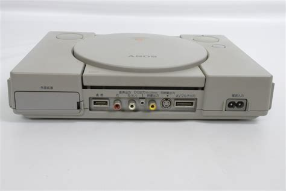

Playstation-1 SHCP-1000
Playstation-1 SHCP-1000
İSCPH-1000 modeli PlayStation 1'in orijinal ve ilk versiyonudur. Bu model, oyun endüstrisi için devrim niteliğinde bir yenilik oldu ve Sony, bu alandaki liderliğinin temelini attı. SCPH-1000, 32-bit RISC MIPS R3000A işlemci (33.8688 MHz) ve 2 MB RAM'e sahip CD-ROM tabanlı bir depolama sistemi sunar. Maksimum çözünürlük 640 x 480 piksel ve 16-bit renk derinliği olarak belirlenmiştir. Çeşitli bağlantı noktaları arasında AV multi çıkışı, RFU DC OUT ve kontrol cihazı girişi bulunur.